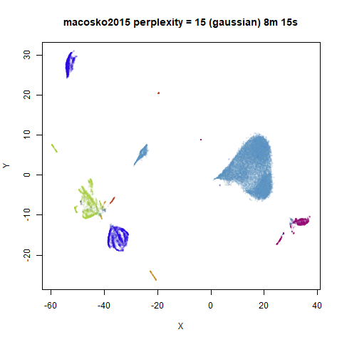
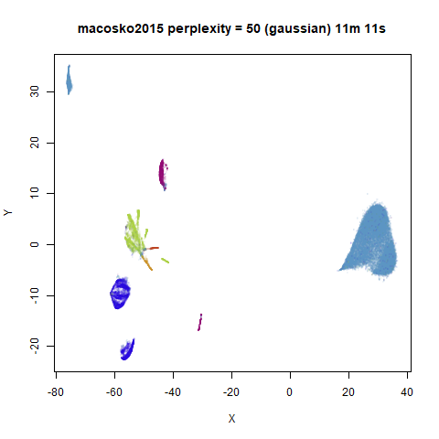
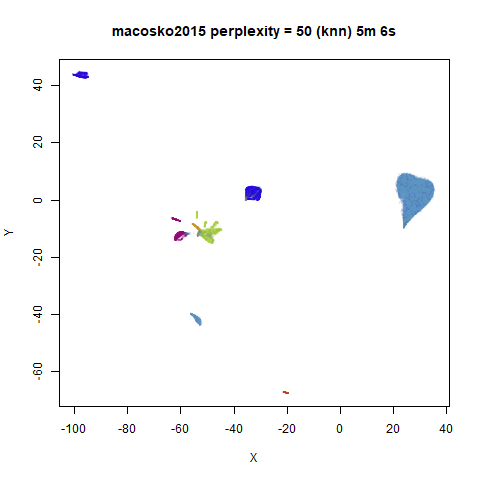

This is part of the documentation for uwot.
This page is a gallery of images of the result of running the
lvish function on some datasets. For all intents and
purposes, it should perform very similarly to the LargeVis method (see also
its github).
For details on the datasets, and to compare with the output of UMAP and t-SNE, see the UMAP examples gallery.
Gaussian Perplexity
By default, lvish uses a Gaussian similarity function to
determine perplexities, just like t-SNE. These results are given
below.
There are two images per dataset. The left-hand image uses a perplexity of 15, which is similar to the sort of settings UMAP uses. The right-hand image is for a perplexity of 50, which is the LargeVis default.
The only other non-default settings was to use
pca = 100, which reduces the input dimensionality to
100.
iris_lv15 <- lvish(iris, pca = 100, perplexity = 15)
iris_lv50 <- lvish(iris, pca = 100, perplexity = 50)Note that by default lvish uses a random initialization
and a much larger number of epochs to match the LargeVis defaults. This
makes the optimization take a lot longer than UMAP. LargeVis uses
multiple threads during the optimization phase, but lvish
does not, to ensure reproducibility of results with a fixed random seed.
To get multi-threaded performance like LargeVis, add the option,
n_sgd_threads = "auto", e.g.:
iris_lv15 <- lvish(iris, pca = 100, perplexity = 15, n_sgd_threads = "auto")I would also suggest that you fix the number of epochs to a smaller value initially and see if that provides an adequate visualization.
iris_lv15 <- lvish(iris, pca = 100, perplexity = 15, n_sgd_threads = "auto", n_epochs = 500)


macosko2015
 |
 |
Default initialization in lvish, as with LargeVis and
t-SNE, is from a random distribution. As with t-SNE, you can see one
issue with that is that sometimes clusters get split up by another
cluster and are unable to re-merge. MNIST is the easiest example image
to see this in.
In general, there’s not a huge difference in the effect of increasing
perplexity, for larger datasets. For smaller datasets it’s apparent that
the resulting clusters tend to be more spread out with larger perplexity
values. The norb (small NORB)
dataset shows an obvious difference, where the
perplexity = 15 results are clearly too low, and break up
the structures that are apparent at perplexity = 50. A
similar effect is seen when using UMAP, so I don’t think this is due to
the random initialization of lvish in this case. A
contributing factor is likely to be that the initial PCA dimensionality
reduction to 100 dimensions is too aggressive for NORB and reduces the
nearest neighbor accuracy, which is recovered at higher perplexities (as
this requires finding more near neighbors).
On the other hand, it’s hard to see what’s going on with the
coil20 and especially the coil100 results. If
you could see what was going on from the static images above,
it would be apparent that, in contrast to the norb results,
the perplexity = 50 results are too high here, and the loop
structure of the clusters gets broken up.
The coil100 and coil20 results show an
issue with using LargeVis (and UMAP) that isn’t normally a problem with
t-SNE: the extra repulsion in their cost function can often spread the
data quite far apart compared to the cluster sizes. t-SNE has the
opposite problem of the clusters expanding into a large circular form
which makes discerning clusters harder as the datasets get larger, but
in a single static plot, I find the t-SNE results to be easier to
examine. For UMAP and lvish, you may have to resort to more
interactive means of examining the data, such as using the
embed_plotly function in vizier.
An alternative for lvish is to modify the
repulsion_strength parameter (referred to as
gamma in LargeVis). The default value, 7 is
taken from the LargeVis paper but seems to have been chosen
empiricially. Here are results for coil20 and
perplexity = 50 with the repulsion reduced to
repulsion_strength = 0.7 in the left image, and
repulsion_strength = 0.07 on the right:
 |
 |
This helps a bit, but there are limits: the blue cluster on the right
remains an outlier, and reducing the repulsion_strength too
far causes some of the loops to shrink, as can be seen with the outlying
blue and black clusters for the right-hand plot.
KNN Perplexity
As an alternative to using the Gaussian perplexities, you could use the k-nearest neighbor graph directly, which involves setting the similarity of \(i\) with \(j\) to 1 if \(i\) is in the k-nearest neighbors of \(j\), and 0 otherwise. The usual t-SNE procedure of symmetrizing (but not the normalization step) is then carried out. There are some t-SNE implementations which use kNN-derived perplexities, e.g. the majorization-minimization approach of Yang and co-workers.
The advantage of using the kNN kernel is that you get a sparser set
of edges, which due to lvish using the same formula for
determining the number of iterations required, results in a shorter run
time.
For the results below the kNN perplexities were used by setting
kernel = "knn"
iris_lv15k <- lvish(iris, pca = 100, perplexity = 15, kernel = "knn")
iris_lv50k <- lvish(iris, pca = 100, perplexity = 50, kernel = "knn")For comparison, the top row of images use the same settings as in the
previous section with Gaussian perplexities, and the bottom row show the
results for using the kNN kernel. The run time for each embedding is
given in the image. I used version 0.1.3 of uwot from
CRAN.


macosko2015
|  |  |
 |
 |
For smaller datasets, the kNN kernel gives noticeably different
results to the Gaussian perplexity, particularly for
perplexity = 50. For iris, s1k
and oli, the trend seems to be that the results are more
expanded with the kNN kernel. For frey, coil20
and coil100, the clusters are more separated.
For the larger datasets, the difference in behavior is less
pronounced, although the macosko2015 results show a larger
cluster separation as well.
The good new is that for all cases, the run times are noticeably reduced.
So for larger datasets, using kernel = "knn" seems to be
an ok choice for reducing the runtime of lvish. It also
seems that you may want to use a smaller value of the
perplexity than you would with a Gaussian perplexity, which
further reduces the runtime. For smaller datasets, results are more
mixed. It seems that a smaller perplexity in this case is
definitely to be preferred.